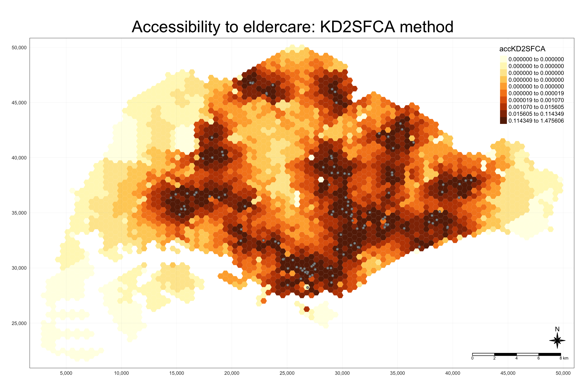
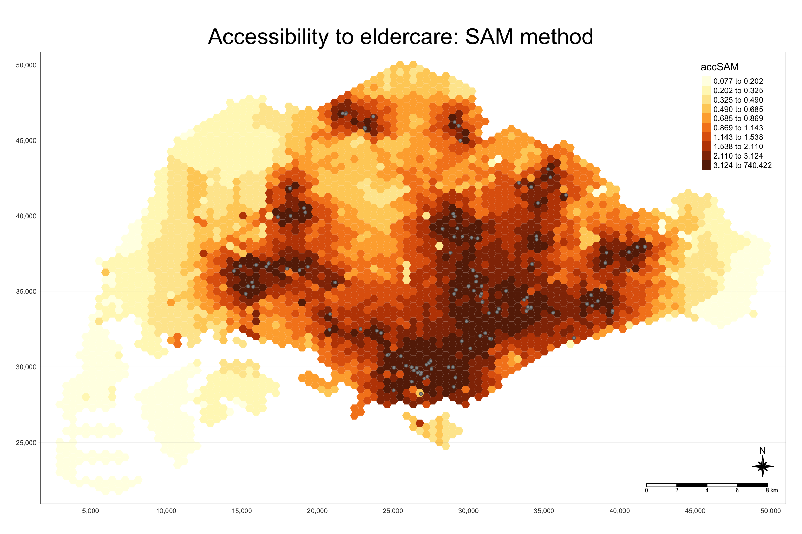

pacman::p_load(tmap, SpatialAcc, sf, ggstatsplot, reshape2, tidyverse)Hands-on Exercise 9: Modelling Geographical Accessibility
1 Overview
In this hands-on exercise, we will learn how to model geographical accessibility by using R’s geospatial analysis packages.
2 The data
Four datasets will be used in this hands-on exercise:
MP14_SUBZONE_NO_SEA_PL:
This is the URA Master Plan 2014 subzone boundary GIS data, downloaded from data.gov.sg.Hexagons:
A GIS dataset consisting of hexagons with a 250m radius. This dataset was created using thest_make_grid()function from thesfpackage and is provided in ESRI shapefile format.ELDERCARE:
This dataset contains GIS data showing the locations of eldercare services, downloaded from data.gov.sg. There are two versions available:ESRI shapefile format
Google KML file format
For this hands-on exercise, the ESRI shapefile format is provided.
OD_Matrix:
A distance matrix in CSV format. The file contains six fields:origin_id: Unique ID values of the origin (i.e., FID of the hexagon dataset).
destination_id: Unique ID values of the destination (i.e., FID of the ELDERCARE dataset).
entry_cost: The perpendicular distance between the origins and the nearest road.
network_cost: The actual network distance between the origin and destination.
exit_cost: The perpendicular distance between the destination and the nearest road.
total_cost: The sum of entry_cost, network_cost, and exit_cost.
All values in the cost-related fields are measured in meters.
Important
Except for the MP14_SUBZONE_NO_SEA_PL dataset, the other three datasets were specially prepared by Prof. Kam for teaching and research purposes.
3 The Packages
We will use following packages in this exercise
We will use following packages in this exercise:
| Package | Description |
|---|---|
| sf | Provides functions to manage, process, and manipulate Simple Features, a formal geospatial data standard that specifies a storage and access model of spatial geometries such as points, lines, and polygons. |
| tidyverse | A collection of R packages for data science tasks such as importing, tidying, wrangling, and visualizing data. |
| tmap | Provides functions for creating cartographic-quality static maps or interactive maps using the leaflet API. |
| SpatialAcc | Provides a set of spatial accessibility measures from a set of locations (demand) to another set of locations (supply) |
| ggstatsplot | Provides functions to creates graphics with details from statistical tests included in the plots themselves. |
| reshape2 | Provides functions to flexibly reshape data. |
To install and launch all R packages.
4 Geospatial Data Wrangling
4.1 Importing Geospatial Data
Three geospatial datasets will be imported from the data/geospatial sub-folder: MP14_SUBZONE_NO_SEA_PL, hexagons, and ELDERCARE.
We will use the st_read() function from the sf package to import these datasets.
mpsz <- st_read(dsn = "data/geospatial", layer = "MP14_SUBZONE_NO_SEA_PL")Reading layer `MP14_SUBZONE_NO_SEA_PL' from data source
`/Users/cham/project/Geospatial-Analytics/chrismanafe/ISSS626-GAA/hands_on_ex/hands_on_ex09/data/geospatial'
using driver `ESRI Shapefile'
Simple feature collection with 323 features and 15 fields
Geometry type: MULTIPOLYGON
Dimension: XY
Bounding box: xmin: 2667.538 ymin: 15748.72 xmax: 56396.44 ymax: 50256.33
Projected CRS: SVY21hexagons <- st_read(dsn = "data/geospatial", layer = "hexagons")Reading layer `hexagons' from data source
`/Users/cham/project/Geospatial-Analytics/chrismanafe/ISSS626-GAA/hands_on_ex/hands_on_ex09/data/geospatial'
using driver `ESRI Shapefile'
Simple feature collection with 3125 features and 6 fields
Geometry type: POLYGON
Dimension: XY
Bounding box: xmin: 2667.538 ymin: 21506.33 xmax: 50010.26 ymax: 50256.33
Projected CRS: SVY21 / Singapore TMeldercare <- st_read(dsn = "data/geospatial", layer = "ELDERCARE") Reading layer `ELDERCARE' from data source
`/Users/cham/project/Geospatial-Analytics/chrismanafe/ISSS626-GAA/hands_on_ex/hands_on_ex09/data/geospatial'
using driver `ESRI Shapefile'
Simple feature collection with 120 features and 19 fields
Geometry type: POINT
Dimension: XY
Bounding box: xmin: 14481.92 ymin: 28218.43 xmax: 41665.14 ymax: 46804.9
Projected CRS: SVY21 / Singapore TMThe report above shows that the R object containing the imported MP14_SUBZONE_WEB_PL shapefile is called
mpsz, and it is a simple feature (sf) object. The geometry type is multipolygon. It’s also important to note that thempszsimple feature object does not have EPSG information.
The code chunk below updates the newly imported mpsz object with the correct EPSG code (i.e., 3414):
mpsz <- st_transform(mpsz, 3414)
eldercare <- st_transform(eldercare, 3414)
hexagons <- st_transform(hexagons, 3414)After transforming the projection metadata, we can verify the projection of the newly transformed mpsz object by using the st_crs() function from the sf package.
st_crs(mpsz)Coordinate Reference System:
User input: EPSG:3414
wkt:
PROJCRS["SVY21 / Singapore TM",
BASEGEOGCRS["SVY21",
DATUM["SVY21",
ELLIPSOID["WGS 84",6378137,298.257223563,
LENGTHUNIT["metre",1]]],
PRIMEM["Greenwich",0,
ANGLEUNIT["degree",0.0174532925199433]],
ID["EPSG",4757]],
CONVERSION["Singapore Transverse Mercator",
METHOD["Transverse Mercator",
ID["EPSG",9807]],
PARAMETER["Latitude of natural origin",1.36666666666667,
ANGLEUNIT["degree",0.0174532925199433],
ID["EPSG",8801]],
PARAMETER["Longitude of natural origin",103.833333333333,
ANGLEUNIT["degree",0.0174532925199433],
ID["EPSG",8802]],
PARAMETER["Scale factor at natural origin",1,
SCALEUNIT["unity",1],
ID["EPSG",8805]],
PARAMETER["False easting",28001.642,
LENGTHUNIT["metre",1],
ID["EPSG",8806]],
PARAMETER["False northing",38744.572,
LENGTHUNIT["metre",1],
ID["EPSG",8807]]],
CS[Cartesian,2],
AXIS["northing (N)",north,
ORDER[1],
LENGTHUNIT["metre",1]],
AXIS["easting (E)",east,
ORDER[2],
LENGTHUNIT["metre",1]],
USAGE[
SCOPE["Cadastre, engineering survey, topographic mapping."],
AREA["Singapore - onshore and offshore."],
BBOX[1.13,103.59,1.47,104.07]],
ID["EPSG",3414]]Notice that the EPSG code is now indicated as 3414.
4.2 Cleaning and updating attribute fields of the geospatial data
There are several redundant fields in the data tables of both the eldercare and hexagons datasets. The code chunks below will be used to exclude those redundant fields. Additionally, a new field called demand will be added to the hexagons data table, and a new field called capacity will be added to the eldercare data table. Both fields will be derived using the mutate() function from the dplyr package.
eldercare <- eldercare %>%
select(fid, ADDRESSPOS) %>%
mutate(capacity = 100)hexagons <- hexagons %>%
select(fid) %>%
mutate(demand = 100)Note that for the purpose of this hands-on exercise, a constant value of 100 is used. In practice, the actual demand for each hexagon and the capacity of each eldercare center should be used.
5 Aspatial Data Handling and Wrangling
5.1 Importing Distance Matrix
The code chunk below uses the read_csv() function from the readr package to import OD_Matrix.csv into RStudio. The imported object is a tibble data frame called ODMatrix.
ODMatrix <- read_csv("data/aspatial/OD_Matrix.csv", skip = 0)Rows: 375000 Columns: 6
── Column specification ────────────────────────────────────────────────────────
Delimiter: ","
dbl (6): origin_id, destination_id, entry_cost, network_cost, exit_cost, tot...
ℹ Use `spec()` to retrieve the full column specification for this data.
ℹ Specify the column types or set `show_col_types = FALSE` to quiet this message.5.2 Tidying distance matrix
The imported ODMatrix organizes the distance matrix in a column-wise format.
However, most modeling packages in R expect a matrix structure where the rows represent origins (also known as the from field) and the columns represent destinations (also known as the to field).
The code chunk below uses the spread() function from the tidyr package to transform the O-D matrix from a “thin” format to a “wide” format.
distmat <- ODMatrix %>%
select(origin_id, destination_id, total_cost) %>%
spread(destination_id, total_cost)%>%
select(c(-c('origin_id')))Currently, the distances are measured in meters because the SVY21 projected coordinate system is used. The code chunk below will be used to convert the unit of measurement from meters to kilometers.
distmat_km <- as.matrix(distmat/1000)6 Modelling and Visualising Accessibility using Hansen Method
6.1 Computing Hansen’s accessibility
We are now ready to compute Hansen’s accessibility using the ac() function from the SpatialAcc package. Before getting started, it is encouraged to review the function’s arguments to ensure all required inputs are available.
The code chunk below calculates Hansen’s accessibility using ac() from SpatialAcc, and data.frame() is used to save the output in a data frame called acc_Hansen.
acc_Hansen <- data.frame(ac(hexagons$demand,
eldercare$capacity,
distmat_km,
#d0 = 50,
power = 2,
family = "Hansen"))
head(acc_Hansen) ac.hexagons.demand..eldercare.capacity..distmat_km..power...2..
1 1.648313e-14
2 1.096143e-16
3 3.865857e-17
4 1.482856e-17
5 1.051348e-17
6 5.076391e-18The default field names are quite messy, so we will rename them to accHansen using the code chunk below.
colnames(acc_Hansen) <- "accHansen"
head(acc_Hansen) accHansen
1 1.648313e-14
2 1.096143e-16
3 3.865857e-17
4 1.482856e-17
5 1.051348e-17
6 5.076391e-18Next, we will convert the data table into a tibble format using the code chunk below.
acc_Hansen <- as_tibble(acc_Hansen)Lastly, the bind_cols() function from dplyr will be used to join the acc_Hansen tibble with the hexagons simple feature data frame. The output will be called hexagon_Hansen.
hexagon_Hansen <- bind_cols(hexagons, acc_Hansen)
head(hexagon_Hansen)Simple feature collection with 6 features and 3 fields
Geometry type: POLYGON
Dimension: XY
Bounding box: xmin: 2667.538 ymin: 22756.33 xmax: 3244.888 ymax: 27756.33
Projected CRS: SVY21 / Singapore TM
fid demand accHansen geometry
1 1 100 1.648313e-14 POLYGON ((2667.538 27506.33...
2 2 100 1.096143e-16 POLYGON ((2667.538 25006.33...
3 3 100 3.865857e-17 POLYGON ((2667.538 24506.33...
4 4 100 1.482856e-17 POLYGON ((2667.538 24006.33...
5 5 100 1.051348e-17 POLYGON ((2667.538 23506.33...
6 6 100 5.076391e-18 POLYGON ((2667.538 23006.33...6.2 Visualising Hansen’s accessibility
6.2.1 Extracting map extend
First, we will extract the extent of the hexagons simple feature data frame using the st_bbox() function from the sf package.
mapex <- st_bbox(hexagons)The code chunk below uses a collection of mapping functions from the tmap package to create a high-quality cartographic map showing accessibility to eldercare centers in Singapore.
tmap_mode("plot")tmap mode set to plottingtm_shape(hexagon_Hansen,
bbox = mapex) +
tm_fill(col = "accHansen",
n = 10,
style = "quantile",
border.col = "black",
border.lwd = 1) +
tm_shape(eldercare) +
tm_symbols(size = 0.1) +
tm_layout(main.title = "Accessibility to eldercare: Hansen method",
main.title.position = "center",
main.title.size = 2,
legend.outside = FALSE,
legend.height = 0.45,
legend.width = 3.0,
legend.format = list(digits = 6),
legend.position = c("right", "top"),
frame = TRUE) +
tm_compass(type="8star", size = 2) +
tm_scale_bar(width = 0.15) +
tm_grid(lwd = 0.1, alpha = 0.5)
6.3 Statistical graphic visualisation
In this section, we will compare the distribution of Hansen’s accessibility values by URA Planning Region.
First, we need to add the planning region field to the hexagon_Hansen simple feature data frame using the code chunk below.
hexagon_Hansen <- st_join(hexagon_Hansen, mpsz,
join = st_intersects)Next, we will use ggplot() to plot the distribution of Hansen’s accessibility values using the boxplot graphical method.
ggplot(data=hexagon_Hansen,
aes(y = log(accHansen),
x= REGION_N)) +
geom_boxplot() +
geom_point(stat="summary",
fun.y="mean",
colour ="red",
size=2)Warning in geom_point(stat = "summary", fun.y = "mean", colour = "red", :
Ignoring unknown parameters: `fun.y`No summary function supplied, defaulting to `mean_se()`
7 Modelling and Visualising Accessibility using KD2SFCA Method
7.1 Computing KD2SFCA’s accessibility
Now, we will calculate Hansen’s accessibility using the ac() function from the SpatialAcc package, and the output will be saved in a data frame called acc_KD2SFCA. Note that KD2SFCA is used for the family argument.
acc_KD2SFCA <- data.frame(ac(hexagons$demand,
eldercare$capacity,
distmat_km,
d0 = 50,
power = 2,
family = "KD2SFCA"))
colnames(acc_KD2SFCA) <- "accKD2SFCA"
acc_KD2SFCA <- tbl_df(acc_KD2SFCA)Warning: `tbl_df()` was deprecated in dplyr 1.0.0.
ℹ Please use `tibble::as_tibble()` instead.hexagon_KD2SFCA <- bind_cols(hexagons, acc_KD2SFCA)7.2 Visualising KD2SFCA’s accessibility
The code chunk below uses a collection of mapping functions from the tmap package to create a high-quality cartographic map showing accessibility to eldercare centers in Singapore. Note that mapex is reused for the bbox argument.
tmap_mode("plot")tmap mode set to plottingtm_shape(hexagon_KD2SFCA,
bbox = mapex) +
tm_fill(col = "accKD2SFCA",
n = 10,
style = "quantile",
border.col = "black",
border.lwd = 1) +
tm_shape(eldercare) +
tm_symbols(size = 0.1) +
tm_layout(main.title = "Accessibility to eldercare: KD2SFCA method",
main.title.position = "center",
main.title.size = 2,
legend.outside = FALSE,
legend.height = 0.45,
legend.width = 3.0,
legend.format = list(digits = 6),
legend.position = c("right", "top"),
frame = TRUE) +
tm_compass(type="8star", size = 2) +
tm_scale_bar(width = 0.15) +
tm_grid(lwd = 0.1, alpha = 0.5)
7.3 Statistical graphic visualisation
Now, we will compare the distribution of KD2SFCA accessibility values by URA Planning Region.
First, we need to add the planning region field to the hexagon_KD2SFCA simple feature data frame using the code chunk below.
hexagon_KD2SFCA <- st_join(hexagon_KD2SFCA, mpsz,
join = st_intersects)Next, we will use ggplot() to plot the distribution of KD2SFCA accessibility values using the boxplot graphical method.
ggplot(data=hexagon_KD2SFCA,
aes(y = accKD2SFCA,
x= REGION_N)) +
geom_boxplot() +
geom_point(stat="summary",
fun.y="mean",
colour ="red",
size=2)Warning in geom_point(stat = "summary", fun.y = "mean", colour = "red", :
Ignoring unknown parameters: `fun.y`No summary function supplied, defaulting to `mean_se()`
8 Modelling and Visualising Accessibility using Spatial Accessibility Measure (SAM) Method
8.1 Computing SAM accessibility
In this section, we will repeat most of the steps learned in the previous section to perform the analysis. However, some of the code will be combined into a single code chunk.
The code chunk below calculates Hansen’s accessibility using the ac() function from the SpatialAcc package, and the output is saved in a data frame called acc_SAM. Note that SAM is used for the family argument.
acc_SAM <- data.frame(ac(hexagons$demand,
eldercare$capacity,
distmat_km,
d0 = 50,
power = 2,
family = "SAM"))
colnames(acc_SAM) <- "accSAM"
acc_SAM <- tbl_df(acc_SAM)Warning: `tbl_df()` was deprecated in dplyr 1.0.0.
ℹ Please use `tibble::as_tibble()` instead.hexagon_SAM <- bind_cols(hexagons, acc_SAM)8.2 Visualising SAM’s accessibility
The code chunk below uses a collection of mapping functions from the tmap package to create a high-quality cartographic map showing accessibility to eldercare centers in Singapore. Note that mapex is reused for the bbox argument.
tmap_mode("plot")tmap mode set to plottingtm_shape(hexagon_SAM,
bbox = mapex) +
tm_fill(col = "accSAM",
n = 10,
style = "quantile",
border.col = "black",
border.lwd = 1) +
tm_shape(eldercare) +
tm_symbols(size = 0.1) +
tm_layout(main.title = "Accessibility to eldercare: SAM method",
main.title.position = "center",
main.title.size = 2,
legend.outside = FALSE,
legend.height = 0.45,
legend.width = 3.0,
legend.format = list(digits = 3),
legend.position = c("right", "top"),
frame = TRUE) +
tm_compass(type="8star", size = 2) +
tm_scale_bar(width = 0.15) +
tm_grid(lwd = 0.1, alpha = 0.5)
8.3 Statistical graphic visualisation
Now, we will compare the distribution of SAM accessibility values by URA Planning Region.
First, we need to add the planning region field to the hexagon_SAM simple feature data frame using the code chunk below.
hexagon_SAM <- st_join(hexagon_SAM, mpsz,
join = st_intersects)Next, ggplot() will be used to plot the distribution by using boxplot graphical method.
ggplot(data=hexagon_SAM,
aes(y = accSAM,
x= REGION_N)) +
geom_boxplot() +
geom_point(stat="summary",
fun.y="mean",
colour ="red",
size=2)Warning in geom_point(stat = "summary", fun.y = "mean", colour = "red", :
Ignoring unknown parameters: `fun.y`No summary function supplied, defaulting to `mean_se()`
9 Reference
Kam, T. S. Modelling Geographical Accessibility. R for Geospatial Data Science and Analytics. https://r4gdsa.netlify.app/chap17.html